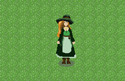

Folk - The Game
Folk is a passion project of mine, and this is one of the first iterations of what the main protagonist may look like. This build was made for one of my first year assessments, in which we were tasked with creating a 2D top-down game using JavaScript.
Here is a video of the character's walking animations in four different directions, using the keys "w", "a", "s", "d".